Pool Accessible Wheelchair Redesign
A reproducible aquatic-therapy wheelchair that sinks in 25 seconds, resists tipping, and keeps hardware away from patients, built for less than a commercial chair.
- My role
- Document Lead; owner of the brake and wheel subsystem redesign
- Team
- 5 mechanical engineering students
- Client
- Wave Therapies, aquatic physical therapy at the Bellevue Aquatic Center
- Dates
- Jan – Jun 2026 · UW Mechanical Engineering Capstone
- Tools
- Onshape, ANSYS Mechanical, Excel, FMEA, mill and lathe, 3D printing

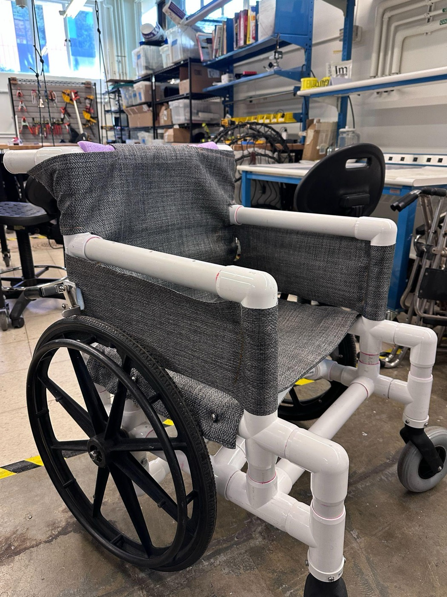
- 25 sto sink to the pool floor (was ~2 min)
- 1.68 inmax frame deflection at 350 lb (FEA; limit 2 in)
- 87.5%user comfort rating (target 80%)
- ~$900in materials vs. $1,200–1,500 commercial
The problem
Wave Therapies runs aquatic physical therapy for patients with chronic pain and neuromuscular conditions, who roll into a heated pool on PVC wheelchairs. After production of their preferred stainless-steel chair ended, the PVC chairs they relied on had four problems:
- Floating. The hollow frame took about two minutes to flood and sink, so the chair drifted and patients could slide out during transfers.
- Tipping. With water at armrest height, a patient leaning back could tip the chair.
- Pressure points. Seat bolts and a front crossbar pressed into patients' legs.
- Brakes. Patients used the brake handles as grab bars when standing, bending the single-joint mounts until the brake, and often the whole chair, was out of service.
Designing for the patient population: many of these patients have reduced muscle mass, so there is little soft tissue to cushion hard contact. A bolt head or crossbar that a typical user would barely notice can cause pain or bruising, which made hardware placement a first-order design constraint.
The client wanted a chair the aquatic center could build, repair, and eventually open-source to other therapy pools, for less than a commercial pool chair.
My role
As Document Lead, I kept the project record for the five-person team: client meeting notes, the budget, and the design reports delivered to the client. I also owned the brake and wheel subsystem redesign:
- Used an FMEA to rank brake failure risks, which steered the design toward a modular brake that is easy to repair and replace.
- Moved the scissor brake behind the rear wheel, out of the patient's reach but at hip height for the therapist, and designed an adaptable multi-point mount so the existing stainless brake could be reused and moved between chairs.
- Verified the brake components in ANSYS to a factor of safety of 2.0.
- Chose PVC for its chlorine resistance, and designed the rear-wheel connection for tool access so wheels can be pulled for maintenance.
- Machined and assembled parts by hand for the prototypes.
Cost of a failure, before and after: a bent brake used to mean replacing a ~$2,000 chair. With the adaptable mount, only a ~$100 mount is swapped.
Approach
1. Requirements
We took apart the client's existing chairs, measured the pool ramp, and turned client interviews into testable targets: sink to the pool floor in under 30 seconds, deflect less than 2 in under a 350 lb user, stay under 32 in wide for the ramp, reach 80% user satisfaction for comfort and stability, and cost less than a commercial chair. The design also followed wheelchair and accessibility standards: ANSI/RESNA WC and ISO 7176 for strength, stability, and braking, ADA 2010 §1009 for pool access, and ASTM/AATCC tests for fabric strength and chlorine resistance.
2. Concepts
We split the chair into four subsystems (frame, seat mesh, brakes, and wheels), generated options for each, and combined them in a morphological chart. A weighted decision matrix scored the combinations on sinking, comfort, durability, and cost.

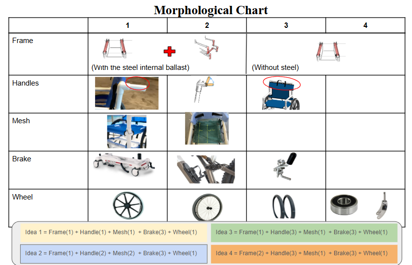
3. Analysis
Buoyancy. Onshape mass properties showed the flooded frame displaces 1,047 in³, for 37.8 lbf of buoyancy against a 47.4 lb frame. The chair sinks, but a net ~10 lb pull explains the slow descent. Quarter-inch vent holes let water in faster, and steel ballast adds weight.
Tipping. A moment balance about the rear axle, with water at armrest height, found the push force a therapist needs to keep the chair from tipping. The model swept 8 ballast layouts, 4 seating positions, users from 70 to 350 lb, and push angles from 0° to 90°.

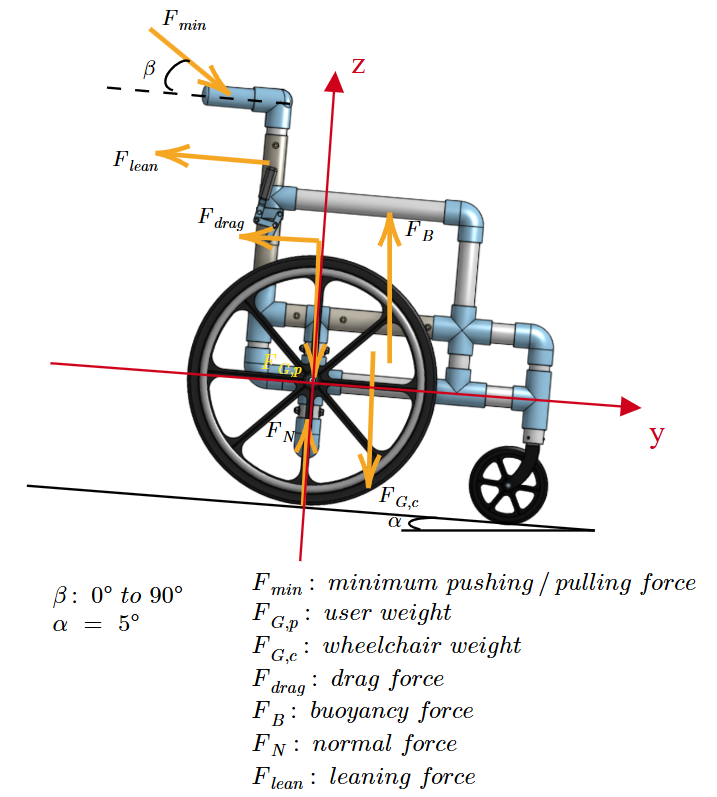

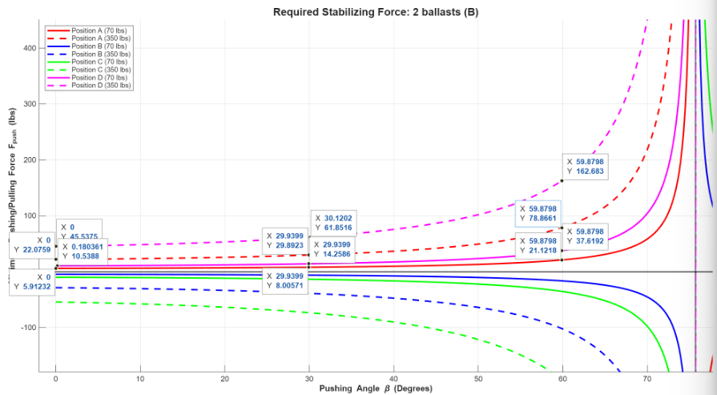
Two findings shaped the design. Tipping risk only appears when the user's weight shifts rearward, and it grows sharply above a 60° push angle, so the therapist guidance is to push low, at 0–30°. And ballast barely helps with tipping: going from zero to five ballasts cut the worst-case push force by only 11.35 lbf while raising the dry weight toward 72.6 lb. That freed us to size ballast for sinking speed alone, and pool testing settled on two 2.5 lb steel ballasts over the casters.
Frame FEA. Removing the front crossbar for comfort let the seat frame cave inward, so the team compared the original frame with five support concepts in ANSYS static structural at 200, 300, and 350 lb. A mesh study refined quadratic tetrahedra from 0.5 in to 0.1 in (81,000 to 897,000 elements). Going from 0.2 in to 0.1 in changed deflection by only 1.4%, so 0.2 in elements balanced accuracy and run time.

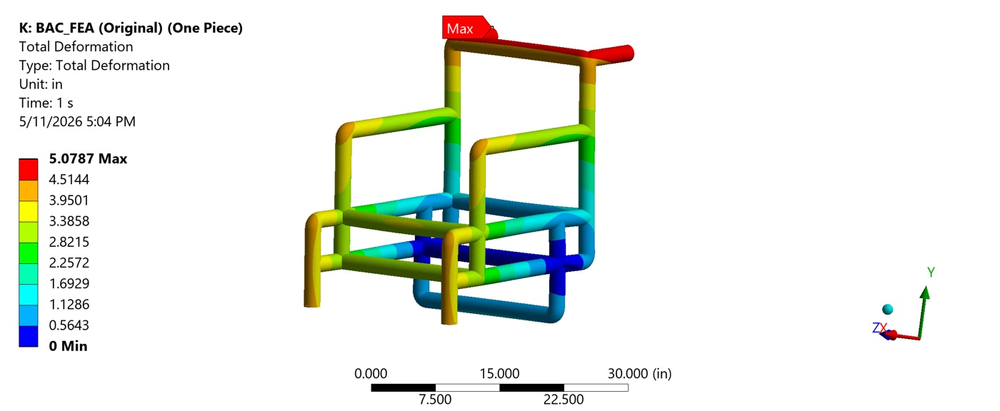

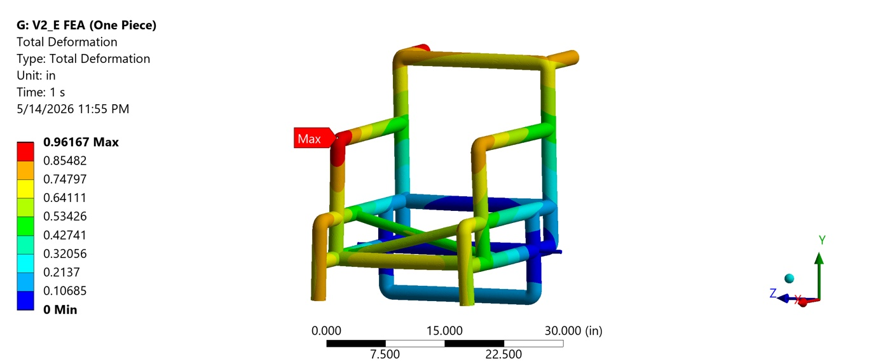
We chose configuration E: a criss-cross support of 1 in pipe joined with sling tees under the seat. Configuration D was slightly stiffer (0.85 in), but E's smaller pipes stay clear of users' thighs as the mesh sags. At 350 lb, E deflects 1.68 in, inside the 2 in limit. Its safety factor against PVC ultimate strength is 1.81 at 200 lb, 1.21 at 300 lb, and 1.04 at 350 lb. That last figure is for the whole frame, separate from the brake components' 2.0, and the team's FEA review flagged 350 lb as a critical case, recommending 300 lb or less for routine use.

4. Brake and wheel subsystems (my focus)
The old toggle brakes sat within the patient's reach and hung from a single joint, so every transfer loaded them as a handle. The redesign keeps a scissor brake, whose over-center linkage tightens as the tire pushes back, but mounts it vertically behind the rear wheel on a multi-point bracket. The 3D-printed mount and connector are sealed with Plasti Dip against the warm, chlorinated air. Because the mount adapts to different chairs and brakes, a damaged brake is a mount swap, not a lost chair.
On the wheels, 24 in mag wheels with solid airless tires remove spoke loosening and puncture risk. The rear axle tube is split into two 8.5 in pipes joined by a tee, which leaves room for a wrench on the ½ in axle bolt so a wheel can come off for maintenance.

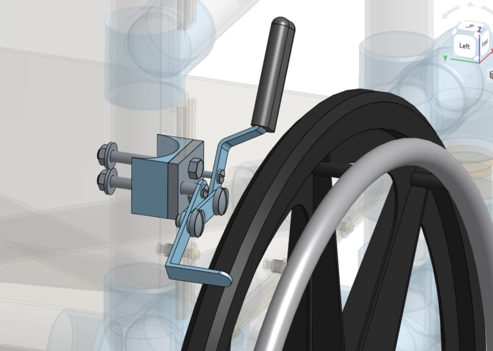

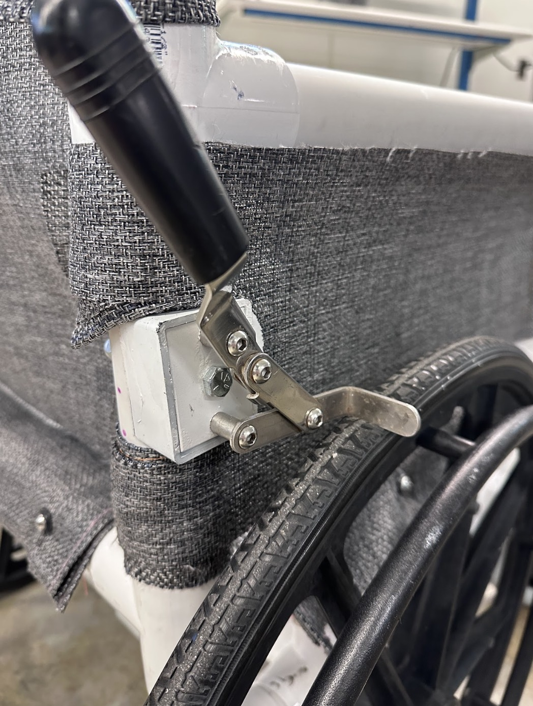

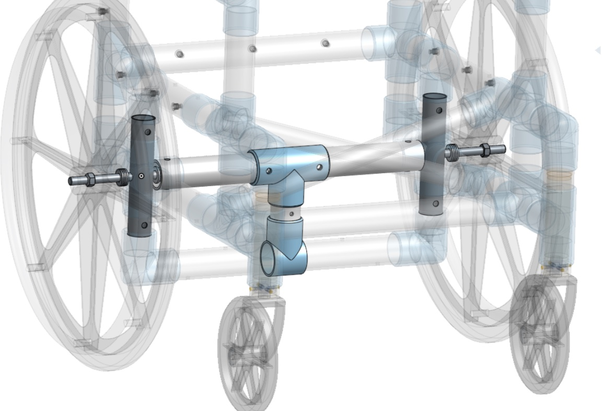
5. Build and iterate
We built four prototypes. V0 was oversized and had no brake. V1's frame caved in above about 120 lb and its first brake design failed. V2's brake worked, but the single-layer mesh stretched and tore at the rivet nuts. The final V3 added the criss-cross support, a two-layer mesh laid at 90° to form a grid, the vertical rear brake, and fully solvent-welded Schedule 40 PVC.
Build details that mattered: PVC fittings bored 0.015–0.020 in oversize for a transition fit, alignment marks drawn on every joint during dry fit because PVC cement sets in seconds, and a backrest curved by filling the pipe with 300–350 °F sand.

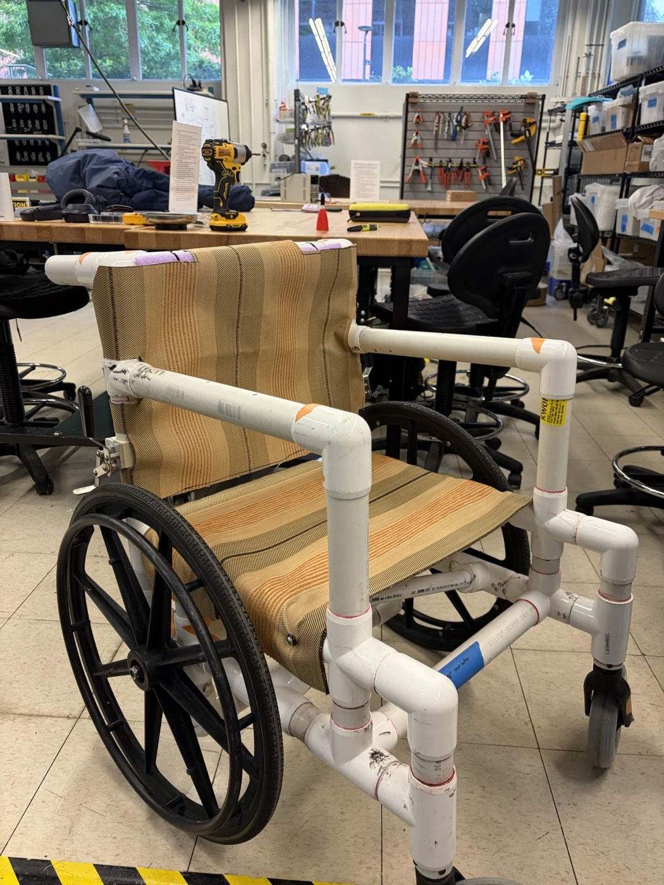

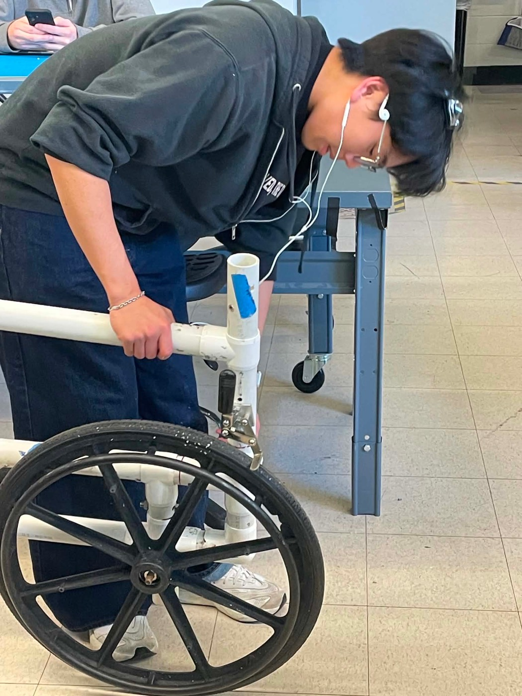

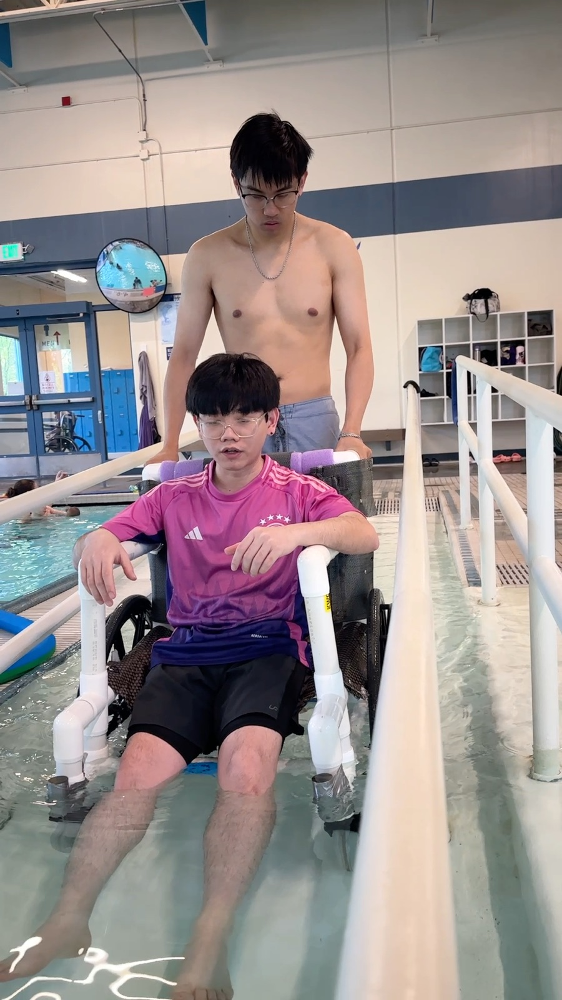
Results
The final prototype met every validation target, confirmed with the client at the Bellevue Aquatic Center.
| Requirement | Target | Result |
|---|---|---|
| Time to sink to the pool floor | < 30 s | 25 s (was ~2 min) |
| Frame deflection at 350 lb (FEA) | < 2 in | 1.68 in |
| User comfort (survey) | ≥ 80% | 87.5% |
| Tip resistance (users actively trying to tip it) | No tip | 100% held |
| Overall width (pool ramp) | < 32 in | 29.8 in |
| Cost | < $2,000 | ~$900 materials, ~$1,100 built |
| Factor of safety (FEA) | 200 lb | 300 lb | 350 lb |
|---|---|---|---|
| Brake components (my subsystem) | 2.0 | ||
| Whole PVC frame (configuration E) | 1.81 | 1.21 | 1.04 |
Next steps we recommended: a stainless-steel ballast or one built into the caster connector, a carbon-fiber brake mount, rubber-cushioned handles, and a footrest.


Full report
-
Final Design Report
By Christopher Tran, Hoang (Long) Dinh, Katie Leija, Kit Nguyen, and Shannon Kwong. The file doesn't record who wrote which section; as Document Lead, I managed the team's documentation.
-
Capstone expo poster
Presented at the UW Mechanical Engineering capstone expo, June 2026.
Skills used
- FMEA
- ANSYS static structural
- Mesh-convergence studies
- Buoyancy and moment hand calculations
- Onshape CAD and drawings
- Design for repair and modularity
- Manual machining
- PVC solvent welding
- Design for patient comfort
- Client communication
- Technical documentation